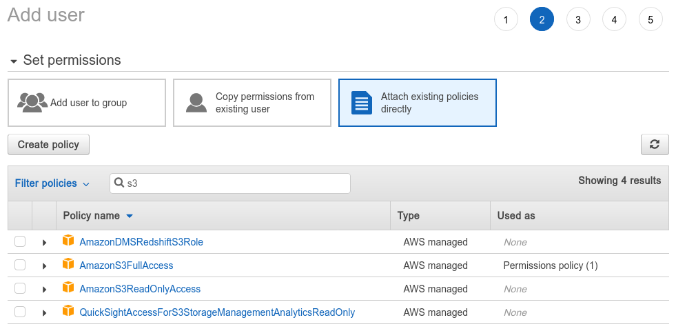
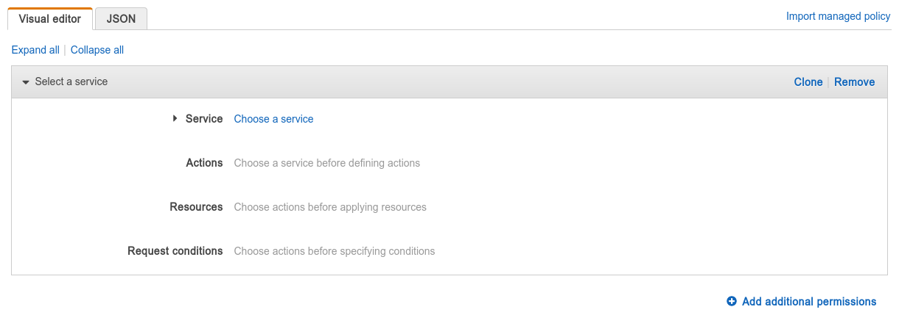
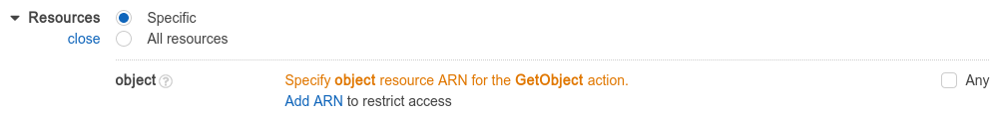

Some days ago I was (again) trying to fiddle with AWS security policies aiming to create a user with only the right to upload to a specific S3 "folder"[1]. I have already attempted this earlier before but with no success, in part because there is just so little documentation about how aws policies work and also in part because of my failure to realize that the tool I use to access S3 - rclone also requires some other permissions other then PutObject (namely ListBucket and GetObject). In this article I will go over how to understand and make use of AWS (specifically S3) security policies.
In the AWS world, clients use an access key to call various AWS APIs, and access keys belogs to users. You can create users (and generate an initial access key) in thed Users page of the IAM console.
A user's permission is controlled by the policies attached to them (or any of the group that they belong to). There are a lot of pre-existing policies for simple cases, such as granting a user full control of a service, etc. For example, in the "add user" page, when you get to "Set permissions", you can see a list of AWS pre-defined policies, and in it you can find AmazonS3FullAccess and AmazonS3ReadOnlyAccess, which is exactly what they sounds like: allowing full read or read/write access to every buckets.

Usually, if you want something more fine-tuned, such as specificing which buckets are allowed to access, you have to create your own policy. This can be done with the "Create policy" button here, or you can also go to the dedicated policies page to manage all your policies. The visual policy editor is probably good enough that you don't need to write JSON policy yourself.

In your policy, you can have one or more permissions (known as "statement" in the JSON), each one can either grant some access or be an explicit deny, which explicitly declare that some operations should not be allowed. AWS first evaluate all explicit deny statements, and if any matches, the operation is denied whether or not some other statements allow the action. You can use the "add additional permissions" button to add more permissions (statements) into your policy.
Each permission targets a set of actions, which themselves corrosponds to various API calls. For example, if you choose "S3" as the "Service" and in "Actions" choose GetObject, this make the permission allows (or denies) reading S3 files. If you choosed the GetObject action, you need to then specify which files to allow/deny the user to read in the "Resources" section.

ARN is, as far as I understand, a fancy name for "the absolute path of a thing". You can use ARN to refer to various things (such as S3 buckets, S3 files (aka. objects), etc.) in AWS, and in this case we need to provide an ARN for a S3 object, which has the form:
arn:aws:s3:::bucket_name/file_path
So, for example, if you have a file named data/data.txt in the myfiles bucket, its ARN would be arn:aws:s3:::myfiles/data/data.txt.
You can add multiple ARNS, and the permission is applied if any of them match. You can also use asterisks (*) in the ARN to denote "any string". Therefore, if you want to allow read access to everything under the data "folder" (and its subfolders), you would enter the ARN arn:aws:s3:::myfiles/data/*.
All of your ARNs will apply to all of the actions that you specified in the same permission. So, if you have a permission that grants PutObject and GetObject, and with an ARN of arn:aws:s3::myfiles/data/data.txt, users with this permission would be able to read, write to, and create the file named data/data.txt. To allow/deny different ARNs for different actions, you can create multiple permission statements.
You can also add request conditions, which allows you to limit what the parameters for the API calls can be. For example, if you have a permission that grants ListBucket, having an request condition of s3:prefix StringLike data/* will limit the user to only be able to list the contents of the data "folder" (and its subfolders). You can see a list of request conditions (and resource types) for each action by clicking on the
icon next to the actions checkbox. Some other interesting conditions include aws:CurrentTime and aws:SourceIp.
You should always test out these policies before using them in production!
You can import these policies by copying the JSON and pasting them into the JSON editor. After doing that, you may go back to the visual editor to change the statements.
denied folder:{
"Version": "2012-10-17",
"Statement": [
{
"Sid": "AllowAll",
"Effect": "Allow",
"Action": [
"s3:PutObject",
"s3:GetObject",
"s3:DeleteObject"
],
"Resource": [
"arn:aws:s3:::secpolicy-test/*"
]
},
{
"Sid": "ExecptDenied",
"Effect": "Deny",
"Action": [
"s3:PutObject",
"s3:GetObject",
"s3:DeleteObject"
],
"Resource": "arn:aws:s3:::secpolicy-test/denied/*"
}
]
}The first statement allows read, write and overwriting any files, but the second statement denies these operations for anything with name starting denied/. Since there is no actual concept of "folders" in S3, you don't have to worry about the user being allowed to delete the denied folder. They can, however, create another regular file named denied and write/delete that file.
For some clients (such as rclone), you also need to grant the user s3:ListBucket for them to successfully upload. Hence for those clients the AllowAll statement should look like this:
{
"Sid": "AllowAll",
"Effect": "Allow",
"Action": [
"s3:ListBucket",
"s3:PutObject",
"s3:GetObject",
"s3:DeleteObject"
],
"Resource": [
"arn:aws:s3:::secpolicy-test",
"arn:aws:s3:::secpolicy-test/*"
]
}Note that there are two resources specified in the above statement: the bucket secpolicy-test and the S3 objects * in secpolicy-test. Since {Put,Get,Delete}Object only takes an object resource, they will ignore the first specified resource. Similarly, ListBucket only takes an bucket resource, so it will ignore the second resource specified.
user folder:{
"Version": "2012-10-17",
"Statement": [
{
"Sid": "list",
"Effect": "Allow",
"Action": "s3:ListBucket",
"Resource": "arn:aws:s3:::secpolicy-test",
"Condition": {
"ForAllValues:StringLike": {
"s3:prefix": "user/*"
}
}
},
{
"Sid": "objectOps",
"Effect": "Allow",
"Action": [
"s3:GetObject*",
"s3:PutObject*",
"s3:DeleteObject*"
],
"Resource": "arn:aws:s3:::secpolicy-test/user/*"
}
]
}rclone copy into /uploads{
"Version": "2012-10-17",
"Statement": [
{
"Sid": "stat",
"Effect": "Allow",
"Action": [
"s3:ListBucket",
"s3:PutObject",
"s3:GetObject"
],
"Resource": [
"arn:aws:s3:::secpolicy-test",
"arn:aws:s3:::secpolicy-test/uploads/*"
]
}
]
}Due to the use of HEAD request to determine existence, rclone needs {Put,Get}Object and ListBucket for uploads. When debugging, you can use -vv --dump headers to see what requests rclone is making.
x" to mean "any files with a name beginning in x/.